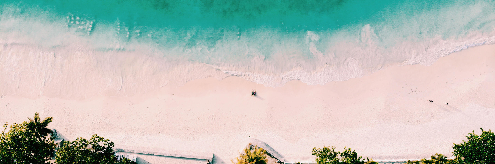
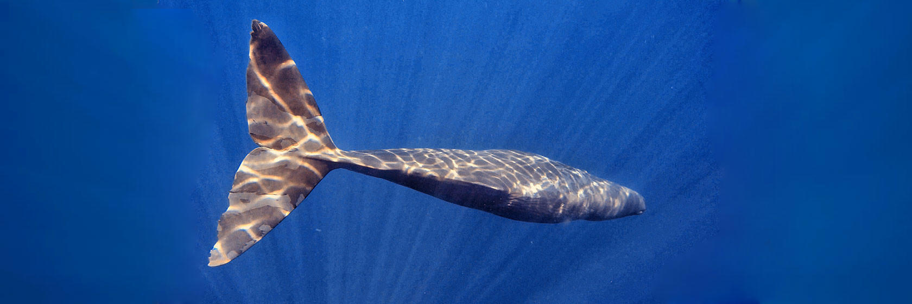
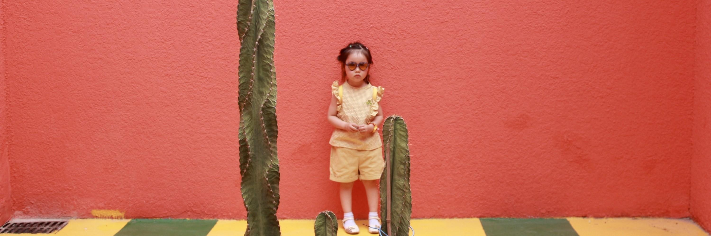

首页
目的地
旅游攻略
旅游日记
去旅行
社区
消息
打卡
登录
|
注册
15
/Oct.2020
格鲁吉亚：与它爱恨纠葛，犹述一书武侠情愁。来饮壶好酒？
15
/Oct.2020
港式文艺漫步地图，想对你说一万遍“我可以”（书店、美食、景观大搜罗）
15
/Oct.2020
地道乐山人带你吃遍心中List（内含早、中、晚、宵夜攻略）
15
/Oct.2020
追鲸的日子啊，那是一段云上的时光
15
/Oct.2020
游走在《请回答1988》的韩国｜首尔、议政府、仁川的寻寻觅觅
历历在目
全部
目的地
攻略
游记
找人
自由行
旅行就要freestyle
跟团游
省心省力 行程透明
当地游
最地道的玩法体验
机票
特惠一折起
签证
服务优质 出签率高
邮轮
移动的海上城堡
热门游记
最新发表
写游记
5月趣上海，非去不可
有时候，人必须远行，才能发现近在咫尺的东西，2岁的这几个月，小脚成长很快，大小便控制自如，让我这个老妈子颇具成就感;语言进步明显，词汇量飞速增加;开始能安静下来而且能坐得住。
23
上海
，by
dafei
13/22
再见成都
从大学时候就被来自 四川 的同学安利春熙路的美女、 成都 串串、郫县豆瓣等等，个人最感兴趣的还是美食了，曾经立下目标，要“吃”下几座城市： 广州 、 北京 、 西安 、 成都 、 武汉 、 南京 、 ...
1
成都
，by
dafei
31/14

超详细易懂的泰国攻略，曼谷+普吉7天自由行
哈喽大家好，我是花生，是一个热爱旅游，梦想吃遍全世界的摄影师，说到 泰国 ，相信很多小伙伴们都不陌生，但是也还有很多朋友没去过 泰国 ，或者没有来一次自由行，这里花生给打算第一次去 泰国 的小伙伴们弄...
134
泰国
，by
dafei
312/144
格鲁吉亚：与它爱恨纠葛，犹述一书武侠情愁。来饮壶好酒？\r\n
动不动手写这篇游记，我有过纠结。ok，fine.我承认就犹豫了十分钟，因为有太多人，为我创造故事的人想记录。anyway，既然决定要写，那么，咱们就得像小学英语作文一样严格要求，依次排列，一个个来咆哮...
884
俄罗斯
，by
dafei
20010/563
上海海昌海洋公园
上海 一行，最后一天我们逛了逛新开的海洋公园。 上海 这个季节正是梅雨季，所以天气凉爽。
23
上海
，by
dafei
34/21
广州三天三夜|跟随必字榜吃喝玩乐耍
已经数不清是第几次 广州 行了，归根结底，仍然是因为吃呀。跟 香港 一样， 广州 总觉得遍地都好吃的，而 广州 人的爱吃也是全国出了名的， 比如 有一句话流传“ 广东 人连 福建 人都吃”！身为 福建...
0
广州
，by
dafei
130/7

追鲸的日子啊，那是一段云上的时光
2019年4月21日， 斯里兰卡 首都 科伦坡 等多地先后发生8次连环炸弹袭击，涉及至少3座教堂及3家酒店。4月22日， 斯里兰卡 发生第9次爆炸。4月24日， 斯里兰卡 一电影院附近发生爆炸。死伤惨...
70
斯里兰卡
，by
dafei
76000/2379
地道乐山人带你吃遍心中List（内含早、中、晚、宵夜攻略）
巴蜀之国，美食之都。全国人民都知道 四川 好吃的多， 成都 好吃的多；而 四川 人民一定知道： 乐山 美食多！
2205
四川
，by
dafei
77000/120

世园会—你值得打卡的地方
常看新闻的老人们一定会感叹，不管是不是住在 北京 ，都有必要去欣赏一下世园会~据说这是未来十年我国举办的级别最高、规模最大的专业类世园会哦~
1
北京
，by
dafei
31/14
港式文艺漫步地图，想对你说一万遍“我可以”
三天半，拨开 香港 的浮华表面，用相机呈现我眼中的港式文艺。
2205
香港
，by
dafei
41000/1240
共2页 / 16条
上一页
1
2
下一页
尾页
旅游攻略推荐
更多
自由行攻略
广州长隆野生动物园
本周热卖
最高立减800·上海飞马尔代夫鲁滨逊努努...
¥11880起
【五月美食节】上海出发塞班岛6天5晚自...
¥3180起
ins网红拍照圣地·上海直飞美娜多5天自...
¥3280起
金卡最高立减500+畅享一价全包·上海往...
¥10680起
北京直飞普吉岛7天自由行（端午/暑期惊...
¥3250起